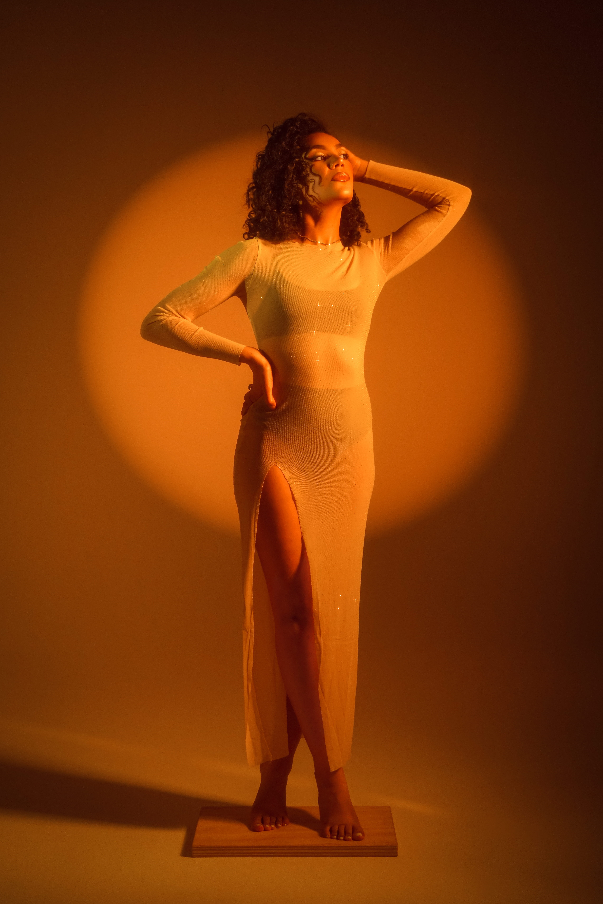

Thoughts on photography, creativity, and the business of making images.
A strong portfolio is your most important marketing tool as a model. Here's a breakdown of the essential shots you need to showcase versatility and land more work.
Read More →
Outfit choices can make or break a portrait session. Here's exactly what to wear — and what to avoid — so your photos look timeless.
Read More →From Minnehaha Falls to the riverfront in Eau Claire, these are my go-to portrait locations across Minnesota and Wisconsin.
Read More →As photographers, we've all experienced finding our own work posted without credit. Here's why crediting creators matters more than you might think.
Read More →AI has made a remarkable upgrade in all aspects of life, including photography. But will it replace the art of capturing real moments?
Read More →Capturing great images is only part of the equation. Here are the marketing principles every photographer should understand to grow their business.
Read More →Every photographer faces moments of doubt and burnout. Here are the strategies that helped me rediscover my passion after losing it entirely.
Read More →